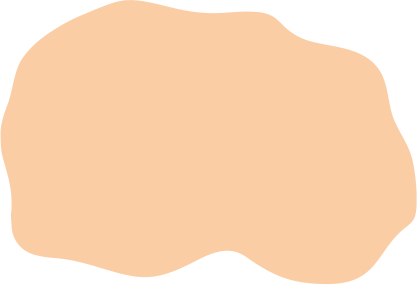
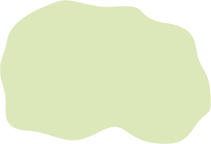
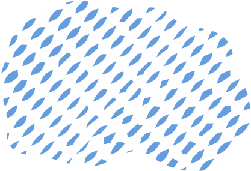

Розселення культурно-історичних спільнот в добу ранньої та середньої бронзи (поч. III – поч. II тис. до н. е.)
Ареали культур
|  | Прафракоіллірійський |
|  | Праслов'яно-балтійський |
|  | Прафінноугорський |
| Індо-іранський | |
| Пратаврський (азово-чорноморська лінія розвитку) |
Межі поширення культур
| Культури кулястих амфор | |
| Стжижувської культури | |
| Почапської групи культури Хлопіце Веселе | |
| Раннього періоду бабинської культури (багатоваликової кераміки) | |
| Кам'янської культури (кам'янсько-лівенцівський тип пам'яток) |
Пам'ятки
| Культури Баден | |
| Культури Ніршег | |
| Культури Отомань | |
| Культури кулястих амфор | |
| Культури шнуркової кераміки (середньодніпровська) | |
| Культури шнуркової кераміки (підкарпатська) | |
| Східнословацька курганна група | |
| Стжижувської культури | |
| Почапської групи культури Хлопіце Веселе | |
| Мар'янівської культури | |
| Ямної культурно-історичної сільноти | |
| Катакомбної культурно-історичної спільноти | |
| Раннього періоду бабинської культури (багатоваликової кераміки) | |
| Кемі-обинської культури | |
| Кам'янської культури (кам'янсько-лівенцівський тип пам'яток) |